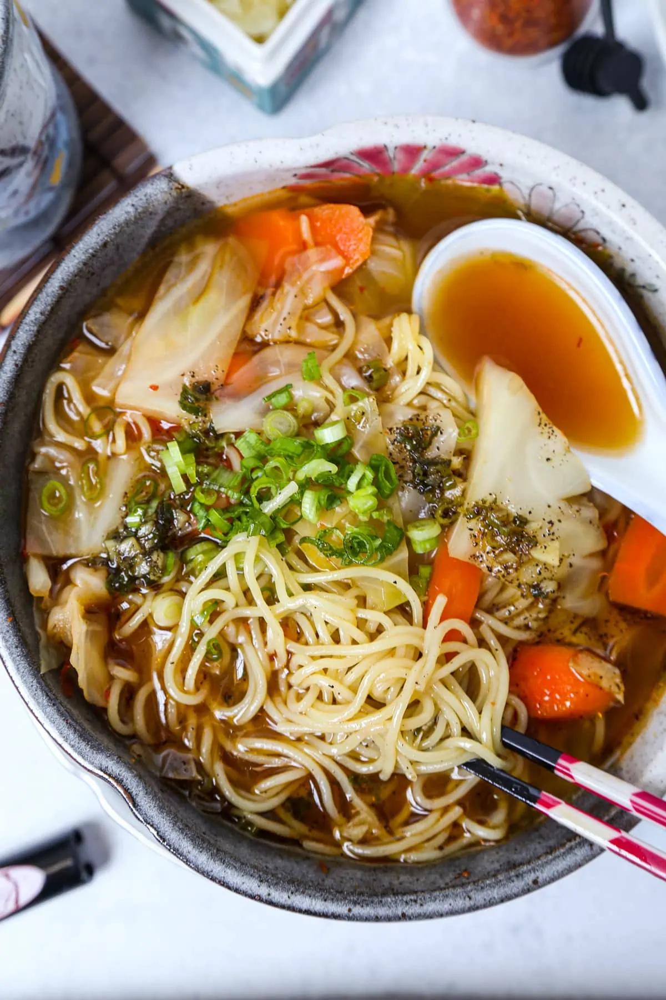

Spicy Miso Ramen

Ingredients
- Powdered vegetable or chicken stock
- Soy Sauce
- Tobanjan
- Gochugaru
- Ramen Noodles
- Cabbage and Carrot
- Miso Paste
- Green Onion
- Ramen Flavored Oil
How to Make Spicy Miso Ramen
- Garther all kitchen tools and ingredients
- Make flavored oil by placing sesame oil, scallion, garlic, black pepper and salt in a small pot over lower heat. Stir consistently until the color changes.
- Turn off heat and pour flavored ramen oil into a small bowl and set aside.
- Prepare ramen broth by placing water into a medium pot and bring to boil.
- Add powdered stock, tobanjan, soysauce and dochugaru - and stir well. Turn heat to low and add cabbage and carrots. Simmer for 5 minutes.
- Cook your noodles according to ramen noodle package instructions. Strain cooked noodles and leave them in strainer.
- Assemble the ramen. Add ramen broth and vegetable to bowl. Stir until miso paste dissovles. Add ramen noodle to the soup and drizzle oil on top. Top with scallions.
Main Page